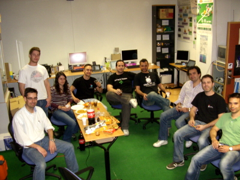

El pasado 16 de Abril se lanzó la versión 4.3 de JDEROBOT, una plataforma software para el desarrollo de aplicaciones para robótica (Anuncio oficial en el blog de JDEROBOT). Este proyecto lo está realizando el grupo de robótica de la Universidad Rey Juan Carlos, cuyo director es Jose María Cañas.
Desde que finalicé mi tesis, he estado colaborando con ellos. Mi intención es dotar a JDEROBOT de soporte para robots modulares así como la integración de plataformas de hardware libre.
En el blog ya publiqué algunos de los esquemas y drivers que desarrollé para JDEROBOT (por ejemplo aquí y aquí). Ahora que la versión 4.3 está finalizada y la API es estable, los voy a reescribir. Toda la información la iré colgando en esta página del wiki.
Has estado aquí y no me he enterado??? avisa cuando vengas, que hace mucho que no nos vemos.
Hola Kal!
Sí, estuve por allí, pero tú no estabas. Seguramente la próxima semana estaré el Jueves por la tarde para dar una charla sobre robótica modular, en el curso de doctorado de robótica. Te avisaré con tiempo por si estás por allí que nos veamos 😉